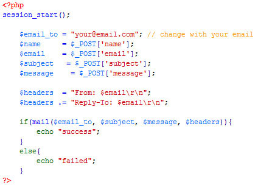

Created: 7 June, 2017
By: SatriaThemes
This template build using Bootstrap framework version 3. All the information within main content is nested within a div with id- name "content". If you need more information you can read Bootstrap documentation on this link
<div id="content"> <div class="container"> <div class="row"> <div class="col-md-4"> this is your content </div> <div class="col-md-8"> this is your content </div> </div> </div> </div>
<div class="row">
<div class="col-md-1">your content</div>
<div class="col-md-2">your content</div>
<div class="col-md-3">your content</div>
<div class="col-md-4">your content</div> <div class="col-md-5">your content</div>
<div class="col-md-6">your content</div> <div class="col-md-7">your content</div>
<div class="col-md-8">your content</div> <div class="col-md-9">your content</div>
<div class="col-md-10">your content</div> <div class="col-md-11">your content</div> <div class="col-md-12">your content</div>
</div>
You can change almost all styles from style.css file.
Open > Send.php. Change $email_to value with your email..

$('#defaultCountdown').countdown({until: new Date(2017, 4-1, 10, 8)}); // year, month, date, hour
Once again, thank you so much for purchasing this theme. As I said at the beginning, I'd be glad to help you if you have any questions relating to this theme. No guarantees, but I'll do my best to assist. If you have a more general question relating to the themes on ThemeForest, you might consider visiting the forums and asking your question in the "Item Discussion" section.
SatriaThemes